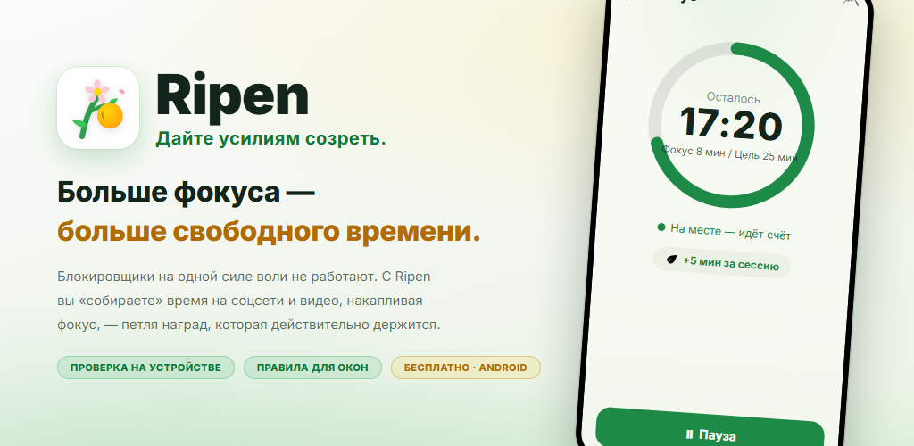
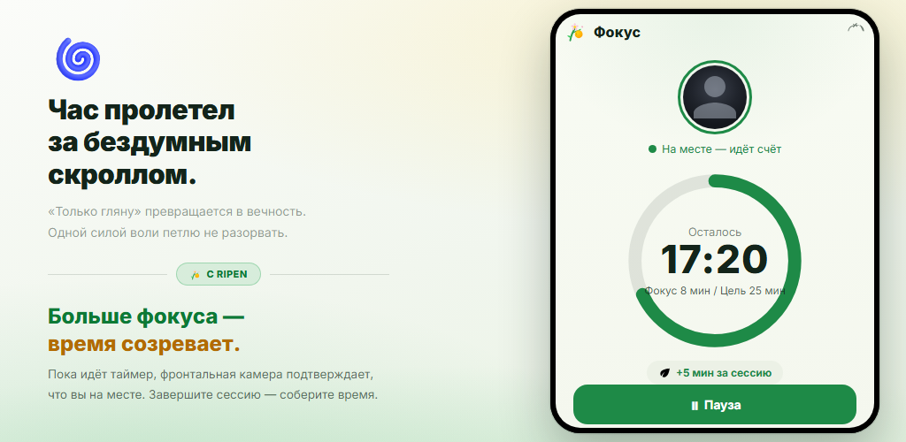
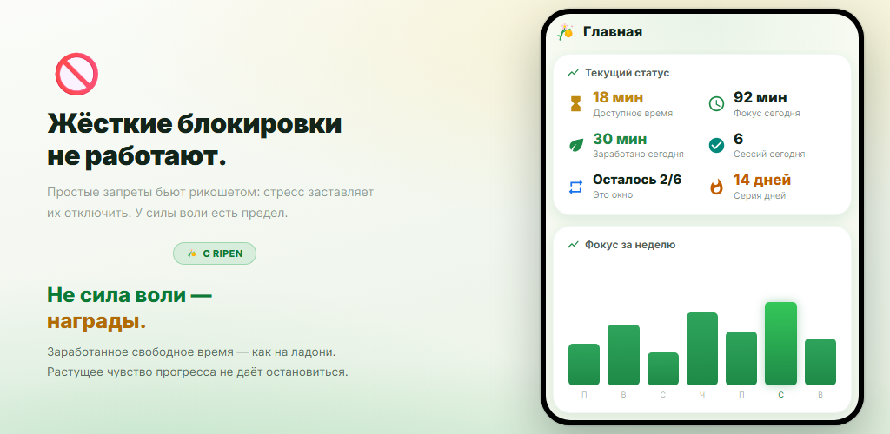
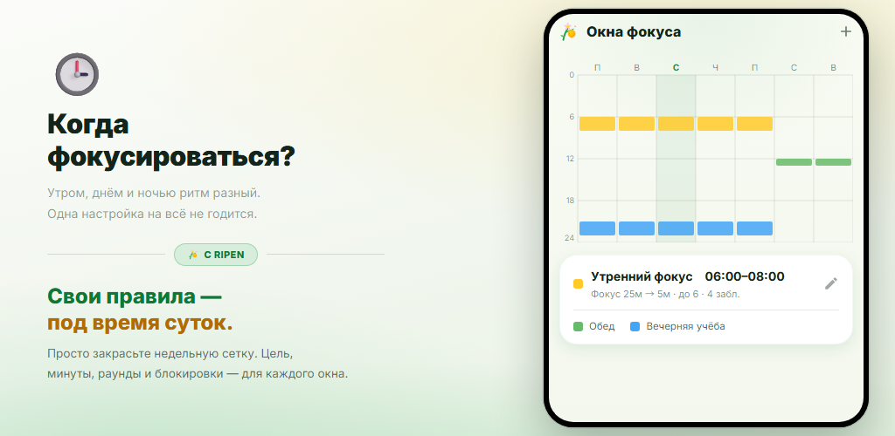
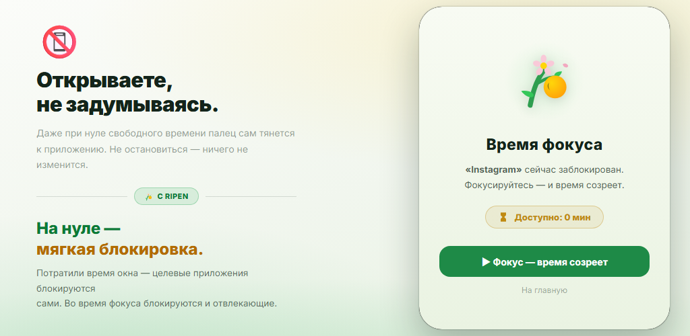
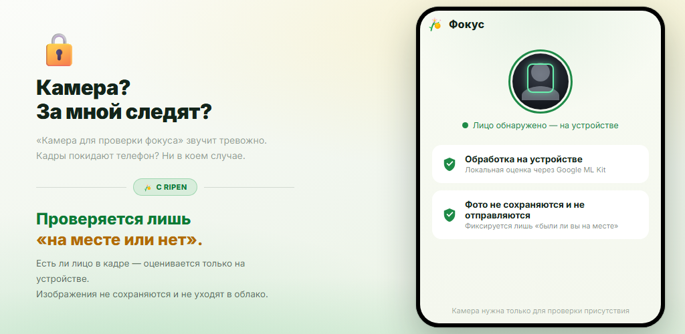

Петля наград
Каждый раз, когда вы завершаете таймер фокуса, вы получаете время для соцсетей и видео. Поведение меняют награды, а не сила воли.
Блокировщики на одной силе воли долго не работают. Ripen — приложение для привычек на основе наград: чем больше вы фокусируетесь и учитесь, тем больше времени «собираете» для соцсетей и видео. Проверка присутствия камерой работает на устройстве, и её можно отключить для любого окна фокуса.
Android 8.0+ · Бесплатно · Без рекламы · Без регистрации

Никаких сложных настроек. Решите только, когда фокусироваться, как долго и сколько времени получить взамен.
Закрасьте недельную сетку, чтобы выбрать дни и часы для фокуса
Если проверка присутствия включена, фронтальная камера подтверждает, что вы на месте, пока идёт отсчёт
Каждый завершённый раунд приносит заданные минуты (можно и через словарный квиз)
Когда остаётся 0 минут, выбранные приложения мягко блокируются
В окнах с включённой проверкой присутствия таймер фокуса идёт, только пока ваше лицо перед экраном. Достигните цели — и получите заданные минуты для соцсетей и видео. За раунды, брошенные раньше времени, ничего не начисляется.

Доступное время, фокус сегодня, заработано сегодня и серия дней — с первого взгляда. Недельные и месячные графики и почасовая тепловая карта покажут, когда вы фокусируетесь лучше всего.

Просто закрасьте недельную сетку, чтобы задать дни и часы для фокуса. У каждого окна своя цель фокуса, минуты за раунд, лимит раундов, блокируемые приложения и проверка присутствия камерой. Вне окон вы свободны.

Когда время окна потрачено, при открытии выбранного приложения появляется экран блокировки. Во время сессий фокуса отвлекающие приложения тоже блокируются. А «блокировка настроек» не даст ослабить правила потом.

Обычный таймер продолжает идти, даже если вы ушли. Ripen с помощью фронтальной камеры определяет только, есть ли лицо перед экраном, — прямо на устройстве. Изображения не сохраняются и не отправляются. Можно выбрать и окна без камеры.

Посмотрите, как вы фокусируетесь, собираете время и как приложения блокируются, когда оно потрачено.
Превратите «хочу бросить, но не могу» в результат — с помощью наград.
Каждый раз, когда вы завершаете таймер фокуса, вы получаете время для соцсетей и видео. Поведение меняют награды, а не сила воли.
Фронтальная камера определяет только, находитесь ли вы перед экраном. Обработка идёт на устройстве, изображения не сохраняются и не отправляются. Проверку можно отключить для любого окна.
Задайте несколько окон по дням и времени. У каждого окна своя цель фокуса, минуты, лимит раундов и блокируемые приложения.
Дайте заданное число правильных ответов в английском словарном квизе (4 варианта) — и получите раунд. Около 10 000 слов по уровням CEFR, тест уровня, список повторения и собственные наборы слов.
Минуты, которые можно потратить сразу с началом окна — ещё до фокуса. Они добавляются к наградам за фокус.
Функция обязательства, которая не даёт подкручивать настройки ради лишнего досуга. Чтобы ослабить правила, нужно запланировать разблокировку и подождать 1–30 дней.
Динамика фокуса, календарь фокуса, процент завершения, ваши лучшие часы для фокуса и динамика использования заблокированных приложений — всё наглядно.
Даже не открывая приложение, вы видите в постоянном уведомлении доступное время, следующее окно фокуса и остаток текущей сессии. По завершении — звук и вибрация.
Выберите системную, светлую или тёмную тему. Приложение доступно на 12 языках, включая русский, английский и японский.
«Камера для проверки фокуса» может настораживать. Ripen спроектирован с приоритетом конфиденциальности.
Присутствие лица определяется на устройстве с помощью Google ML Kit. Видео никогда не отправляется на внешние серверы.
Определяется только, есть ли лицо. Фото и видео никогда не сохраняются и не отправляются. Записывается лишь, сколько секунд вы были на месте и фокусировались.
Записи фокуса и настройки хранятся на вашем устройстве и никогда не отправляются на серверы Ripen. Если включено резервное копирование Android, настройки входят в резервную копию вашего аккаунта Google и восстанавливаются при переустановке.
Не нужны ни регистрация, ни вход, внутри нет рекламы и инструментов аналитики. Скачайте и сразу начинайте.
Скачайте в Google Play